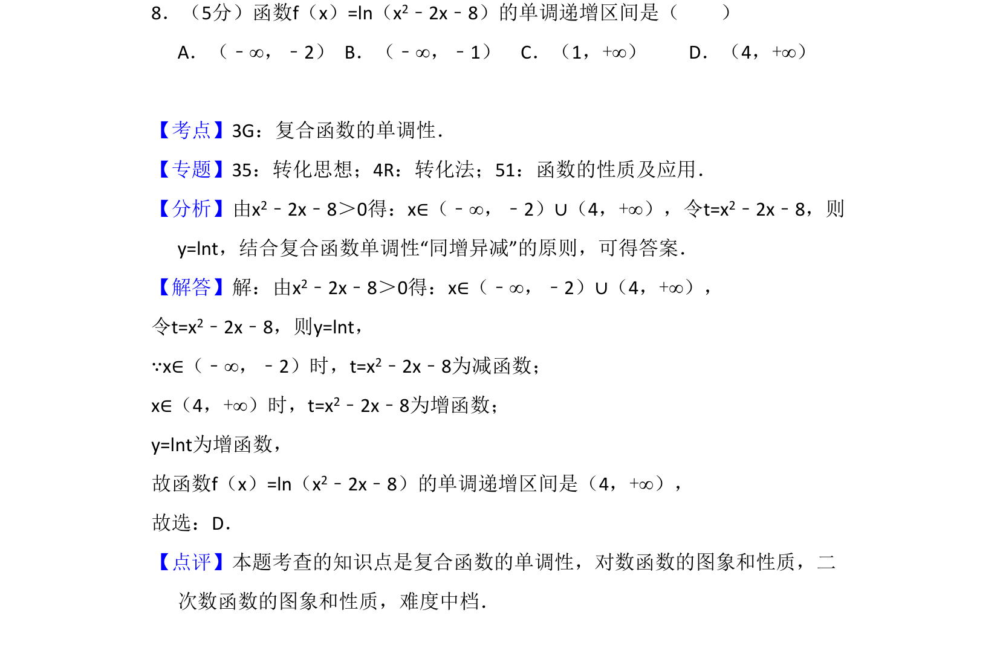
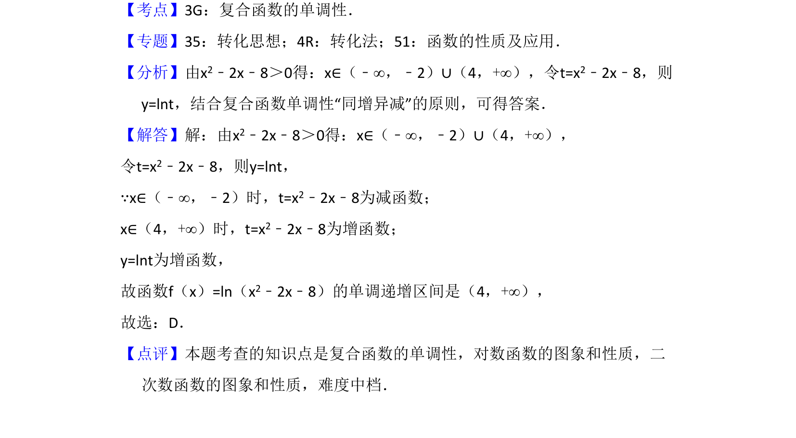

考点：复合函数的单调性 对数函数性质 二次函数性质

本题考查复合函数单调区间的求解，需先求定义域，再利用“同增异减”原则判断。

📄 原 PDF 第 5 页：
素材/真题/吉林/2008-2024·（吉林）数学高考真题/2017年高考数学试卷（文）（新课标Ⅱ）（解析卷）.pdf
8．（5分）函数f（x）=ln（x2﹣2x﹣8）的单调递增区间是（ ） A．（﹣∞，﹣2）B．（﹣∞，﹣1）C．（1，+∞）D．（4，+∞）
【考点】3G：复合函数的单调性．菁优网版权所有 【专题】35：转化思想；4R：转化法；51：函数的性质及应用． 【分析】由x2﹣2x﹣8＞0得：x∈（﹣∞，﹣2）∪（4，+∞），令t=x2﹣2x﹣8，则 y=lnt，结合复合函数单调性“同增异减”的原则，可得答案． 【解答】解：由x2﹣2x﹣8＞0得：x∈（﹣∞，﹣2）∪（4，+∞）， 令t=x2﹣2x﹣8，则y=lnt， ∵x∈（﹣∞，﹣2）时，t=x2﹣2x﹣8为减函数； x∈（4，+∞）时，t=x2﹣2x﹣8为增函数； y=lnt为增函数， 故函数f（x）=ln（x2﹣2x﹣8）的单调递增区间是（4，+∞）， 故选：D． 【点评】本题考查的知识点是复合函数的单调性，对数函数的图象和性质，二 次数函数的图象和性质，难度中档．